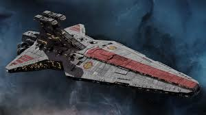
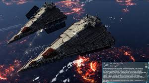
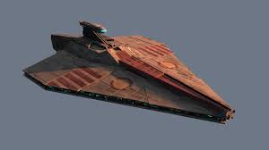
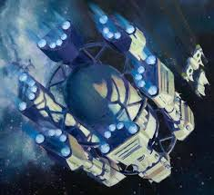
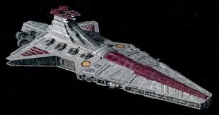

Republic Capital Ships
These enormous vessels serve as the backbone of the Republic Navy — command ships, heavy assault platforms, and strategic mobile bases deployed across key fronts.
Major Capital-Class Vessels:
-
Venator-class Star Destroyer — Mainline capital ship of the Republic. Balanced in firepower and starfighter deployment.
 -
Victory-class Star Destroyer — Heavily armored and slower than the Venator, used for orbital assaults and planetary sieges.
 -
Acclamator-class Assault Ship — Used in the early war as both troop transport and frontline warship. Featured atmospheric re-entry ability.
 -
Outbound Flight — A massive dreadnought-based deep-space exploration vessel launched under Jedi supervision. Destroyed before reaching its destination.
 -
Resolute-class Star Destroyer — A modified Venator flagship configuration. Famously captained by Anakin Skywalker.
